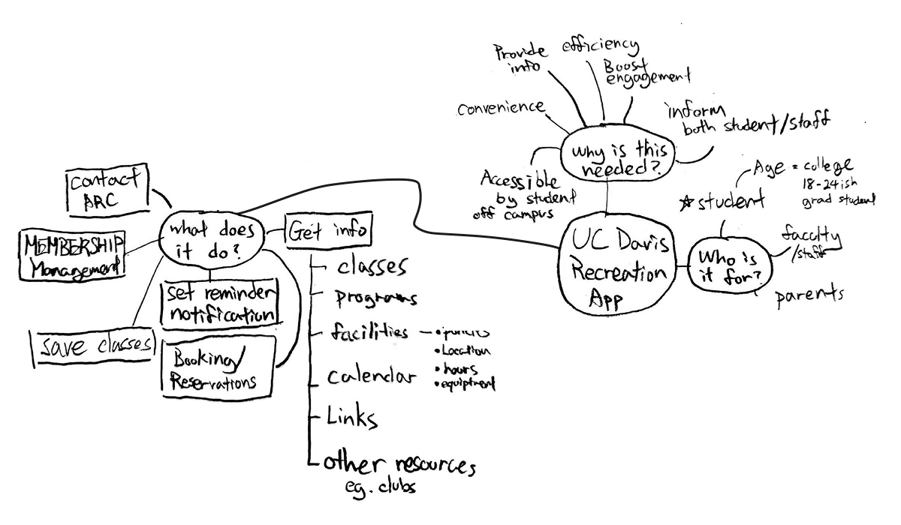

Project Overview
The UCD Recreation App redesign project aims to address usability issues, improve the visual flow, and enhance overall user experience. The target audience includes students, faculty, staff, and alumni who rely on the app for accessing recreational services and information.
Goals and Objectives

- Improve Visual Flow: Enhance layout, animation, and overall visual coherence.
- Improve Accessibility: Ensure fonts and types are legible and accessible.
- Redesign User Flow: Streamline processes such as log-in and calendar viewing for better user experience.
My Role
As the designer for the UCD Rec App redesign, I was responsible for:
- Conducting user research to identify key pain points and areas for improvement.
- Performing competitive analysis to benchmark against similar apps.
- Designing new user interfaces and flows to address identified issues.
- Developing wireframes and prototypes to visualize the improved design.
- Implementing a cohesive design system to unify the app's visual elements.
Tools and Technologies Used
- Design Tools: Illustrator, Photoshop
- Development Tools: Figma (for prototyping)
- Additional Technologies: Google Analytics (for user feedback and behavior analysis)
User Research and Findings
User Needs & Current Features

The target audience includes UCD students, faculty/staff, and alumni. Key features and concepts were brainstormed to meet their needs effectively.
Current UI Problems
- Some features redirect users to the UCD website instead of displaying information directly.
- Lack of transition animation and unified visual flow between pages.
- Small font sizes and logos.
User Feedback
- Trouble logging in with 2FA every time.
- The app does not function as intended.
Competitive Analysis
Brown University Rec App
- Better visual presentation.
- Clear calendar view.
- Informative blank page messages.
Sac State App
- Direct links to the recreation center website.
- Unified graphics.
- Clear user flow.
Design Solutions
Redesign User Flow
An improved user flow was developed to simplify navigation and enhance user experience, particularly focusing on:
- Streamlined log-in process.
- Enhanced booking interface with a clean calendar view.
Wireframes and Prototyping
- Booking page
- Contact page
- Blank page handling
Design System
- Primary Color Theme: Extracted from the UCD logo and webpage for theme unity.
- Fonts: Lato for a modern look and readability, Monoton for background styling.
Flow Improvement
- Simplified CAS log-in process.
- Clean and easy-to-use calendar view for booking classes.
Emotional Design
- Added messages to blank/incomplete pages to inform users if the page is blank or just loading.
- Apologetic messages upfront to appeal to user emotions.
Contact Page Reorganization
- Consolidated contact information into a single page for ease of access.
- Added a link to the UCDAVIS Campus Recreation website.
Challenges and Solutions
- Challenge: Ensuring seamless integration of improved features without disrupting user experience.
- Solution: Conducted thorough testing and iterative design improvements based on user feedback.
- Challenge: Maintaining user engagement and retention.
- Solution: Incorporated interactive elements and emotional design to enhance user satisfaction and encourage repeated use of the app.
Outcomes and Impact
Completed prototype of the UCD Rec App with improved visual flow, accessibility, and user experience. Positive feedback from user testing, who reported a more intuitive and enjoyable experience.
Visuals and Links
For more details, please contact me!
Check Out My Other Projects